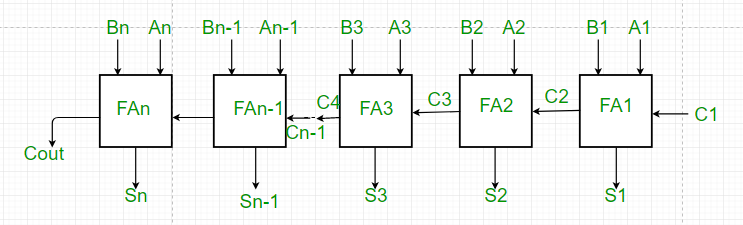
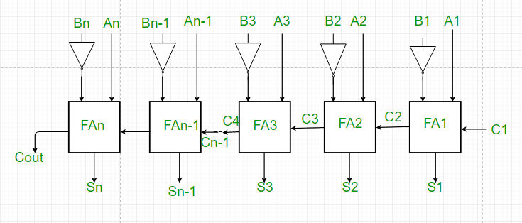

Prerequisite – Full adder, Full Subtractor
Parallel Adder –
A single full adder performs the addition of two one bit numbers and an input carry. But a Parallel Adder is a digital circuit capable of finding the arithmetic sum of two binary numbers that is greater than one bit in length by operating on corresponding pairs of bits in parallel. It consists of full adders connected in a chain where the output carry from each full adder is connected to the carry input of the next higher order full adder in the chain. A n bit parallel adder requires n full adders to perform the operation. So for the two-bit number, two adders are needed while for four bit number, four adders are needed and so on. Parallel adders normally incorporate carry lookahead logic to ensure that carry propagation between subsequent stages of addition does not limit addition speed.

Working of parallel Adder –
- As shown in the figure, firstly the full adder FA1 adds A1 and B1 along with the carry C1 to generate the sum S1 (the first bit of the output sum) and the carry C2 which is connected to the next adder in chain.
- Next, the full adder FA2 uses this carry bit C2 to add with the input bits A2 and B2 to generate the sum S2(the second bit of the output sum) and the carry C3 which is again further connected to the next adder in chain and so on.
- The process continues till the last full adder FAn uses the carry bit Cn to add with its input An and Bn to generate the last bit of the output along last carry bit Cout.
Parallel Subtractor –
A Parallel Subtractor is a digital circuit capable of finding the arithmetic difference of two binary numbers that is greater than one bit in length by operating on corresponding pairs of bits in parallel. The parallel subtractor can be designed in several ways including combination of half and full subtractors, all full subtractors or all full adders with subtrahend complement input.

Working of Parallel Subtractor –
- As shown in the figure, the parallel binary subtractor is formed by combination of all full adders with subtrahend complement input.
- This operation considers that the addition of minuend along with the 2’s complement of the subtrahend is equal to their subtraction.
- Firstly the 1’s complement of B is obtained by the NOT gate and 1 can be added through the carry to find out the 2’s complement of B. This is further added to A to carry out the arithmetic subtraction.
- The process continues till the last full adder FAn uses the carry bit Cn to add with its input An and 2’s complement of Bn to generate the last bit of the output along last carry bit Cout.
Advantages of parallel Adder/Subtractor –
- The parallel adder/subtractor performs the addition operation faster as compared to serial adder/subtractor.
- Time required for addition does not depend on the number of bits.
- The output is in parallel form i.e all the bits are added/subtracted at the same time.
- It is less costly.
Disadvantages of parallel Adder/Subtractor –
- Each adder has to wait for the carry which is to be generated from the previous adder in chain.
- The propagation delay( delay associated with the travelling of carry bit) is found to increase with the increase in the number of bits to be added.
Reference – Adder – Wikipedia